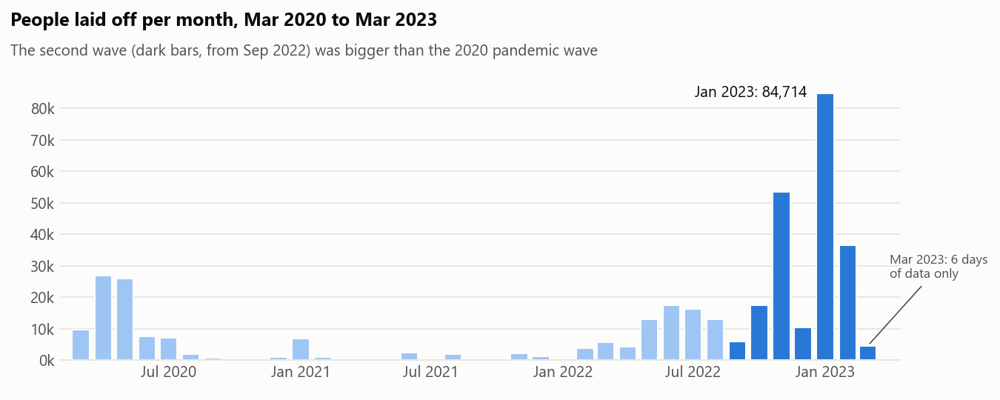

Tech layoffs, 2020 to 2023
I cleaned a public list of 2,361 tech layoff announcements and used it to answer five practical questions.
The problem
Public datasets are messy. This one had duplicate rows, the same company spelled in different ways, missing industries, and dates stored as text.
Analysis on uncleaned data gives wrong answers, so the cleaning had to be careful, and every change had to be recorded so it could be checked.
What I did
- Removed duplicates, fixed spellings and filled in missing values only where it was safe, keeping a log of every change.
- Ran checks to confirm the cleaned data made sense before analysing any of it.
- Answered five questions: when layoffs peaked, which industries cut deepest, whether young startups were more likely to close, how often companies cut twice, and what happened in Nigeria.
What I found
The second wave was bigger

From September 2022 to March 2023, 212,744 people were laid off, three times as many as in the 2020 wave. January 2023 alone was larger than all of 2021.
Young startups were most at risk

Startups at the earliest funding stages were about seven times more likely to shut down completely than larger, later-stage companies.
Big totals can mislead
Retail lost the second-most jobs, but only 4% of its workforce. Travel, crypto and fitness companies cut more than 20% of theirs. A big total often just means a big company.
Nigeria
Nigeria had 15 recorded layoff events, 12 of them between September 2022 and March 2023. Jumia accounted for almost half of the reported total.
What it means
Careful cleaning changes the answers. Matching companies by name alone would have merged three different companies called Bolt and given them the wrong industry.
For technical readers
MySQL (window functions, CTEs, data-quality checks), Python for the charts